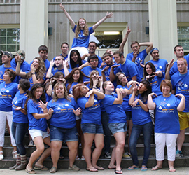
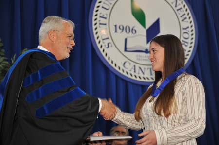

Roll Sandwich Roll!
by Mike Rotch; December 23rd, 2014
Last Sunday evening, around 8:00 p.m., the South Harmon Sandwiches won their 1st collegiate football game since 2010! The final score came with the Sandwiches ahead 31-27 in an impresive win over the College of Faith Glory Eagles.
There was an all around outstanding effort on both sides of the ball, however, the big play of the night came from the junior running back, Juicy Tolufay. There were 20 seconds left on the clock at 2nd down and goal on the 1yd line with one timeout left. The Sandwiches were down three points to the Glory Eagles.
Head coach Duke Clemson decided not to throw the ball but instead gave the ball to Tolufay who charged into the endzone giving the sandwiches an impressive win. No one can handle the S.H.I. storm!

Putting a STAIN on Child Abuse
by Anna Graham; December 19th, 2014
This past week the S.H.I. Student Team Against Instability and Neglect (STAIN) visited Minneapolis to particpate in the National Anti-Hitting Kids Summit. STAIN participated in a series of fundraisers and awareness campaigns throught the year which helped them to raise over nine whole dollars. This ranked them in the top 1st percentile of Colleges across the nation.
When asked about their experiences, STAIN members had this to say:
"It was just really nice being around people who share similar interests and have an equal fervor for not beating kids." -Martha Greenwich, STAIN President
"I really learned a lot about the dangers associated with shaking babies." -Lane Kiffin, former member of STAIN
The S.H.I. STAINs really made an impact on child abuse in Minneappolis and say that they look forward to spreading their knowledge to current and future parents.

Stamping Out Bird Flu with Cat Poo
by Nancy Ann Cianci; December 18th, 2014
South Harmon student Mary A. Richman recently received the Marrion D. Carrion Award for her work curing early cases of the Avian Flu.
Richman found that there is a rare chemical called Hacktenithinide which is capable of curing the disease within 36 hrs of contraction. Though the chemical is relatively rare, it is most commonly found in cat feces. Mary's research provides a method where the Hacktenithinide can be extracted from the feline waste and applied to patients in need of it.
"I'm really excited that I can make a difference in people's lives. I just wish that I could do it without cat poop." -Mary A. Richman